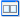
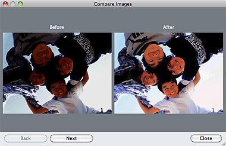

You can correct/enhance images in this window.
To display the Correct/Enhance Images window, click  (Correct/Enhance Images) in the Select Images or Edit screen, or in the Layout/Print screen of Photo Print.
(Correct/Enhance Images) in the Select Images or Edit screen, or in the Layout/Print screen of Photo Print.
(1) Task Area
(2) Toolbar
Available tasks and settings may vary between the Auto and Manual tabs.
Click the Auto or Manual tab to display the corresponding tab.
Use the functions in the Auto tab to apply corrections and enhancements to the entire image.
Auto Photo Fix
Applies automatic corrections suitable for photos.
 Important
ImportantThe Auto Photo Fix function is not available for Photo Print. Photo Print allows you to automatically apply suitable corrections to all photos when printing, by selecting Enable Auto Photo Fix in Color correction for printing on the Advanced tab of the Preferences dialog.
To display the Preferences dialog, click  (Settings) in the Layout/Print screen or select Preferences... from the File menu.
(Settings) in the Layout/Print screen or select Preferences... from the File menu.
Prioritize Exif Info
Select this checkbox to apply corrections primarily based on the settings made at the time of shooting.
Deselect this checkbox to apply corrections based on the image analysis results. It is recommended that you normally select this setting.
 Note
NoteExif is a standard format for embedding various shooting data in digital camera images (JPEG).
For Photo Print, you can apply suitable corrections based on Exif information automatically by selecting Enable Auto Photo Fix in Color correction for printing on the Advanced tab of the Preferences dialog and selecting the Prioritize Exif Info checkbox.
Red-Eye Correction
Corrects red eyes.
NoteFor Photo Print, you can also automatically correct red eyes by selecting Enable Auto Photo Fix in Color correction for printing on the Advanced tab of the Preferences dialog and selecting the Enable Red-Eye Correction checkbox.
Face Sharpener
Sharpens out-of-focus faces.
You can adjust the effect level using the slider.
Digital Face Smoothing
Enhances skin beautifully by reducing blemishes and wrinkles.
You can adjust the effect level using the slider.
Apply to all images
Automatically corrects/enhances all images displayed in the thumbnail list.
OK
Applies the selected effect to the selected image or all images.
Reset Selected Image
Cancels all corrections and enhancements applied to the selected image.
Save Selected Image
Saves the corrected/enhanced image (the selected one).
Save All Corrected Images
Saves all the corrected/enhanced images displayed in the thumbnail list.
Exit
Click to close the Correct/Enhance Images window.
There are two menus on the Manual tab: Adjust and Correct/Enhance.
Use Adjust to adjust brightness and contrast, or to sharpen the entire image.
Use Correct/Enhance to correct/enhance specific areas.
Brightness
Adjusts the overall image brightness.
Move the slider to the left to darken and right to brighten the image.
Contrast
Adjusts the contrast of the image. Adjust the contrast when the image is flat due to lack of contrast.
Move the slider to the left to decrease and right to increase the contrast of the image.
Sharpness
Emphasizes the outline of the subjects to sharpen the image. Adjust the sharpness when the photo is out of focus or text is blurred.
Move the slider to the right to sharpen the image.
Blur
Blurs the outline of the subjects to soften the image.
Move the slider to the right to soften the image.
Show-through Removal
Removes show-through of text from the reverse side or removes the base color. Adjust the show-through level to prevent text on the reverse side of thin document or the base color of the document from appearing on the image.
Move the slider to the right to increase the show-through removal effect.
Opens the Advanced Adjustment dialog in which you can make fine adjustments to the image brightness and color tone.
For Brightness/Contrast and Tone, select a color in Channel to adjust either Red, Green or Blue, or select Master to adjust three colors together.
Brightness/Contrast
Adjust the brightness and contrast of the image.
Move the Brightness slider to the left to darken and right to brighten the image.
Move the Contrast slider to the left to decrease and right to increase the contrast of the image.
Tone
Adjust the brightness balance by specifying Highlight (the brightest level), Shadow (the darkest level) and Midtone (the color in the middle of Highlight and Shadow).
Move the Highlight slider to the left to brighten the image.
Move the Midtone slider to the left to brighten and right to darken the image.
Move the Shadow slider to the right to darken the image.
Color Balance
Adjust the vividness and color tone of the image.
Move the Color Balance slider to the left or right to emphasize the corresponding color.
NoteThese are complementary color pairs (each pair produces a shade of gray when mixed). You can reproduce the natural colors of the scene by reducing the cast color and increasing the complementary color. Colorcast is a phenomenon where a specific color affects the entire picture due to the weather or ambient strong colors.
It is usually difficult to correct the image completely by adjusting only one color pair. It is recommended that you find a portion in the image where it should be white, and adjust all three color pairs so that the portion turns white.
Defaults
Resets all adjustments.
Close
Closes the Advanced Adjustment dialog.
NoteThe Brightness and Contrast values set in Adjust do not change even if the brightness and color tone are adjusted in the Advanced Adjustment dialog.
Defaults
Resets each adjustment (brightness, contrast, sharpness, blur, and show-through removal).
Reset Selected Image
Cancels all corrections, enhancements and adjustments applied to the selected image.
Save Selected Image
Saves the corrected/enhanced/adjusted image (the selected one).
Save All Corrected Images
Saves all the corrected/enhanced/adjusted images displayed in the thumbnail list.
Exit
Click to close the Correct/Enhance Images window.
Red-Eye Correction
Corrects red eyes in the selected area.
You can adjust the effect level using the slider.
NoteFor Photo Print, red eyes are automatically corrected when printing by selecting Enable Auto Photo Fix in Color correction for printing on the Advanced tab of the Preferences dialog and selecting the Enable Red-Eye Correction checkbox. To correct manually, deselect the checkbox.
Face Brightener
Corrects the entire image to brighten the facial area in and around the selected area.
You can adjust the effect level using the slider.
Face Sharpener
Corrects the entire image to sharpen the facial area in and around the selected area.
You can adjust the effect level using the slider.
Digital Face Smoothing
Enhances skin beautifully by reducing blemishes and wrinkles in the selected area.
You can adjust the effect level using the slider.
Blemish Remover
Reduces moles in the selected area.
OK
Applies the selected effect to the specified area.
Undo
Cancels the latest correction/enhancement.
Reset Selected Image
Cancels all corrections, enhancements and adjustments applied to the selected image.
Save Selected Image
Saves the corrected/enhanced/adjusted image (the selected one).
Save All Corrected Images
Saves all the corrected/enhanced/adjusted images displayed in the thumbnail list.
Exit
Click to close the Correct/Enhance Images window.
(Zoom In/Zoom Out)
Displays the enlarged or reduced preview of the image.
(Full Screen)
Displays the entire image in Preview.
 (Compare)
Displays the Compare Images window. You can compare the images before and after the correction/enhancement/adjustment side by side.
The image before the correction/enhancement/adjustment is displayed on the left, and the image after the correction/enhancement/adjustment is displayed on the right.
